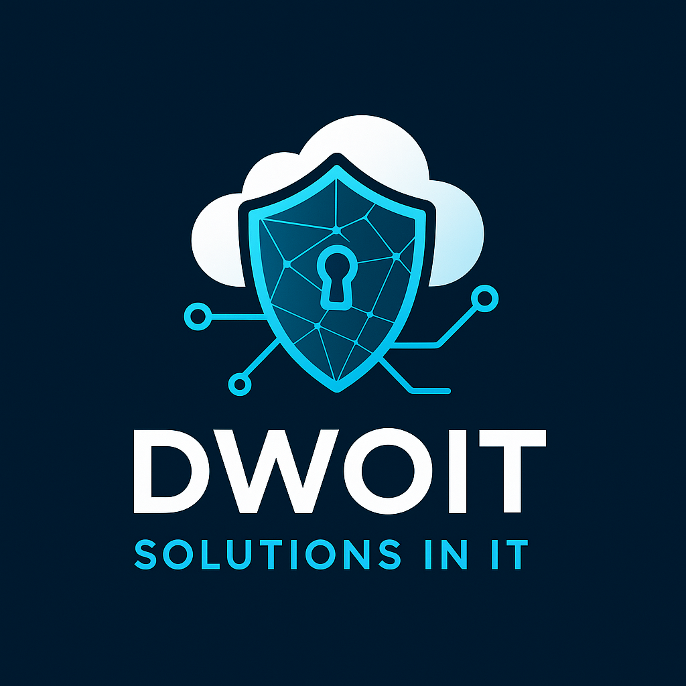

Microsoft Infrastructure
Windows Server, Active Directory, Microsoft 365 e administração de ambientes corporativos.
Soluções modernas de TI para empresas que precisam de segurança, disponibilidade, integração de sistemas e uma infraestrutura preparada para crescer.

Do ambiente local à nuvem e aos sistemas corporativos, ajudamos empresas a modernizar, integrar, proteger e manter seus serviços críticos disponíveis.
Windows Server, Active Directory, Microsoft 365 e administração de ambientes corporativos.
Integração entre infraestrutura local e Microsoft Azure com foco em disponibilidade e escalabilidade.
Proteção de redes, identidades, servidores e acesso remoto com práticas de segurança em camadas.
Estratégias de backup, Veeam, recuperação de desastres e continuidade de negócios.
Integração de ERP, CRM, sistemas comerciais e dados para melhorar visibilidade e eficiência operacional.
Consultoria técnica para projetos, melhorias, suporte e evolução do ambiente de TI.
Exemplos visuais de projetos de infraestrutura, disaster recovery, ERP e integração de sistemas desenvolvidos ao longo da experiência profissional.

Portfólio técnico reunindo projetos de arquitetura de infraestrutura, integração de sistemas corporativos, ERP e continuidade de negócios.

Arquitetura com Hyper-V, Veeam e Microsoft Azure para backup, replicação e recuperação de serviços críticos.

Integração entre Mega ERP, Vespera Sales, Multidados CRM e Movdesk para unificação de processos e informações.

Separação de ambientes Oracle e integração de múltiplos ERPs com plataformas comerciais e de gestão.

Arquitetura orientada à redução de silos entre ERP, CRM, vendas e suporte, melhorando visibilidade e tomada de decisão.
Mais detalhes sobre experiência, projetos, certificações e arquiteturas de Dulcionor Willian.